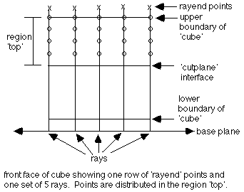

* place points on the boundaries in the x and y directions (1,1,0)
createpts/xyz/5,5,1/0.,0.,1.1/1.,1.,1.1/1,1,0/
* give the points defined by the createpts command the name, rayend
pset/rayend/seq/1,0,0/

* create rays between points in rayend and the plane below the cube
* distribute 3 points along these rays in the region top
* add one point at the upper external boundary for each ray
* will get 4 points total along each ray in region top
* "pset,get,rayend" refers to all the points named rayend
* the three points: (0.,0.,-.1), (0.,1.,-.1), (1.,1.,-.1)
* define a plane whose normal points toward the rayend points
regnpts/top/3/pset,get,rayend/xyz/0.,0.,-.1/0.,1.,-.1/1.,1.,-.1/0,0/

* distribute 4 points along these rays in the region bottom
* add one point at the lower external boundary for each ray
* add one point at the material interface for each ray since
* bottom contains the interface - a total of 6 points for each ray.
* points will be distributed such that the ratio of distances between
* any two consecutive pairs of points is 0.6, traveling from the source
* of the ray (the plane) to the ray end.
regnpts/bottom/4/pset,get,rayend/xyz/0.,0.,-.1/0.,1.,-.1/1.,1.,-.1/1,.6/